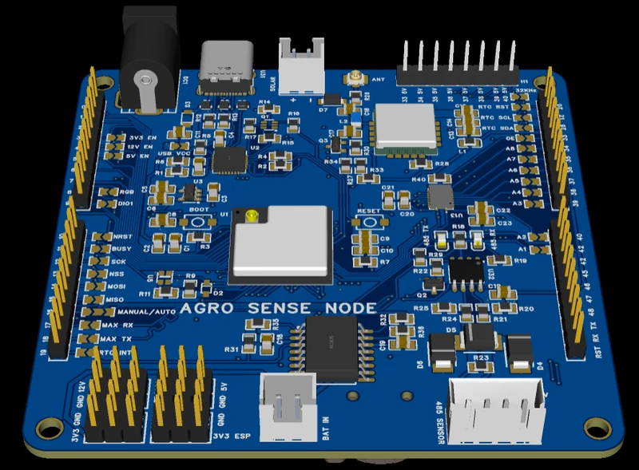
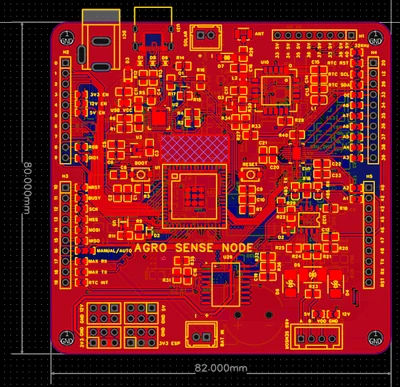
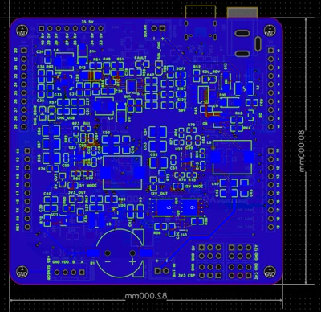
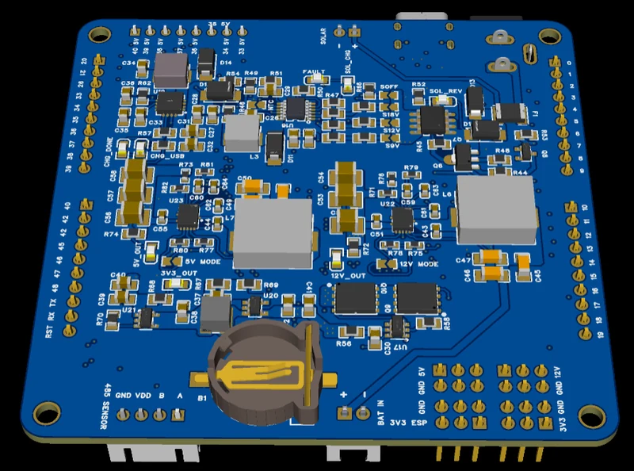
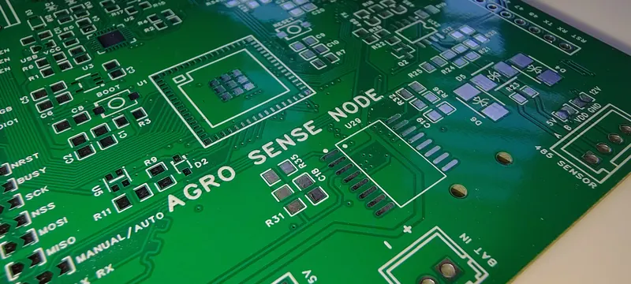
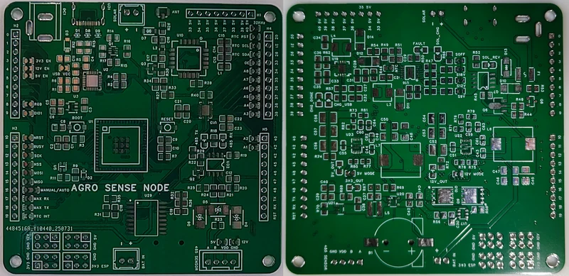
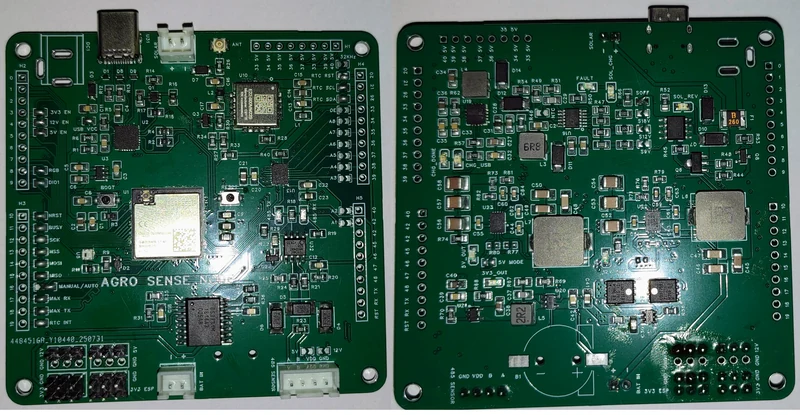
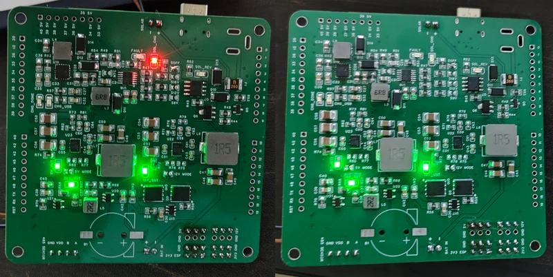

U2 · M.Tech capstone · Revision 2 of 3
AgroSense Node rev 2
The revision that went to four copper layers — MPPT solar harvesting and a multi-rail power tree on 82 × 80 mm, and the bring-up that found two real layout mistakes.

Where it sits
The AgroSense node went through three revisions: rev 1 was a 2-layer prototype, rev 2 moved to four copper layers, and rev 3 is the one in the field. Each build folded in what the previous one's bring-up found rather than patching faults on the bench.
Rev 2 is where the board went to four copper layers — 82 × 80 mm, 195 components.
Power
Solar input through an MPPT charge controller with a wide input range, so the same board works behind panels of quite different sizes. Battery charging and reverse-current protection are handled separately from the harvesting stage, with a load switch between the pack and the rails downstream.
A buck gives the 3.3 V logic rail; boost converters give 5 V and a selectable 9/12 V for sensors that need more. Keeping those separate rather than sharing one supply is what makes it possible to shut most of the board down between readings.
What bring-up found
Two faults on the first assembled boards, both mine, both layout rather than part choice.
The USB data pair to the UART bridge was routed reversed, so the board wouldn't enumerate. And the boost converter section didn't route cleanly — the ground return and via placement around the switching node weren't good enough.
Both went into rev 3 rather than getting patched on the bench. That's the honest version of this board: it worked, with two defects that taught me more than the parts that came out right first time.
Gallery






